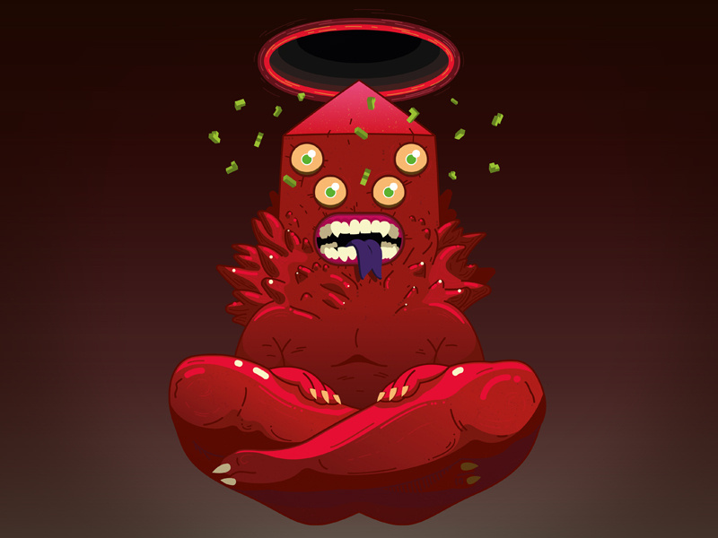

What's Golb's Deal?
Gold is the god of Chaos in the animated series adventure time. He lives outside of our dimension and can only be conjured by a super-powerful-magic-weilding being such as Magic Man or Betty.
Who can conjure Golb?
Watch out for these bitches
- Magic Man can probs do it even though he hasn't.
- Betty has shown us that she can do it, because she's crazy.
- King of Mars (Abe Lincoln) can also probably do it although he hasn't.
The citizens of OOO
These are the citizens of OOO who are impacted by the thoughtless and selfish decision to conjour Golb.